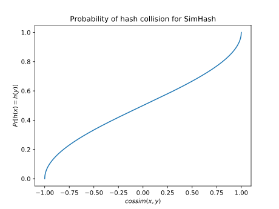

Cosine similarity
This section is currently being developed. If you're interested in helping write this section, feel free to open a pull request; otherwise, please check back later.
Definition
Cosine similarity, roughly speaking, measures the angle between a pair of inputs. Two inputs are very similar if the angle between them is low, and their similarity drops as the angle between them increases.
Concretely, cosine similarity is computed as
\[\text{cossim}(x,y) = \frac{\left\langle x,y\right\rangle}{\|x\|\cdot\|y\|} = \left\langle\frac{x}{\|x\|},\frac{y}{\|y\|}\right\rangle\]
where $\left\langle\cdot,\cdot\right\rangle$ is an inner product (e.g., dot product) and $\|\cdot\|$ is the norm derived from that inner product. $\text{cossim}(x,y)$ goes from $-1$ to $1$, where $-1$ corresponds to low similarity and $1$ corresponds to high similarity. To calculate cosine similarity, you can use the cossim function exported from the LSH module:
julia> using LSHFunctions, LinearAlgebra
julia> x = [5, 3, -1, 1]; # norm(x) == 6
julia> y = [2, -2, -2, 2]; # norm(y) == 4
julia> cossim(x,y) == dot(x,y) / (norm(x)*norm(y))
true
julia> cossim(x,y) == (5*2 + 3*(-2) + (-1)*(-2) + 1*2) / (6*4)
trueSimHash
SimHash[1][Charikar02] is a family of LSH functions for hashing with respect to cosine similarity. You can generate a new hash function from this family by calling SimHash:
julia> hashfn = SimHash();
julia> n_hashes(hashfn)
1
julia> hashfn = SimHash(40);
julia> n_hashes(hashfn)
40Once constructed, you can start hashing vectors by calling hashfn(x):
hashfn = SimHash(100)
# x and y have high cosine similarity since they point in the same direction
# x and z have low cosine similarity since they point in opposite directions
x = randn(128)
y = 2x
z = -x
hx, hy, hz = hashfn(x), hashfn(y), hashfn(z)
# Among the 100 hash functions that we generated, we expect more hash
# collisions between x and y than between x and z
sum(hx .== hy) > sum(hx .== hz)Note that SimHash is a one-bit hash function. As a result, hashfn(x) returns a BitArray:
julia> hashfn = SimHash();
julia> n_hashes(hashfn)
1
julia> hashes = hashfn(randn(4));
julia> typeof(hashes)
BitArray{1}
julia> length(hashes)
1Since a single-bit hash doesn't do much to reduce the cost of similarity search, you usually want to generate multiple hash functions at once. For instance, in the snippet below we sample 10 hash functions, so that hashfn(x) is a length-10 BitArray:
julia> hashfn = SimHash(10);
julia> n_hashes(hashfn)
10
julia> hashes = hashfn(randn(4));
julia> length(hashes)
10The probability of a hash collision (for a single hash) is
\[Pr[h(x) = h(y)] = 1 - \frac{\theta}{\pi}\]
where $\theta = \text{arccos}(\text{cossim}(x,y))$ is the angle between $x$ and $y$. This collision probability is shown in the plot below.

Footnotes
- 1
SimHashAPI reference - Charikar02Moses S. Charikar. Similarity estimation techniques from rounding algorithms. In Proceedings of the Thiry-Fourth Annual ACM Symposium on Theory of Computing, STOC '02, page 380–388, New York, NY, USA, 2002. Association for Computing Machinery. 10.1145/509907.509965.